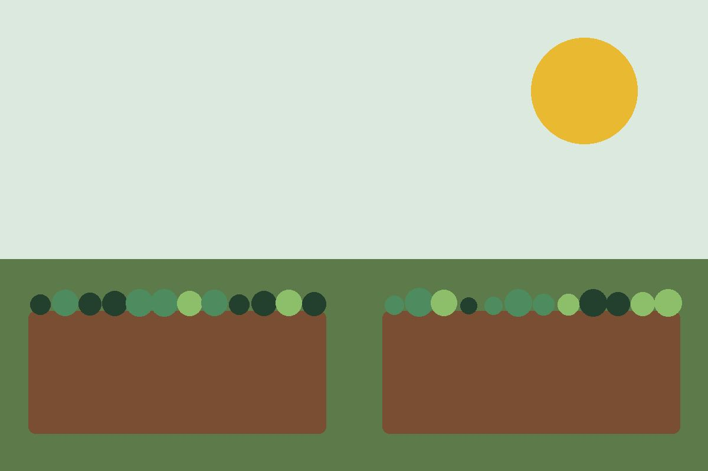
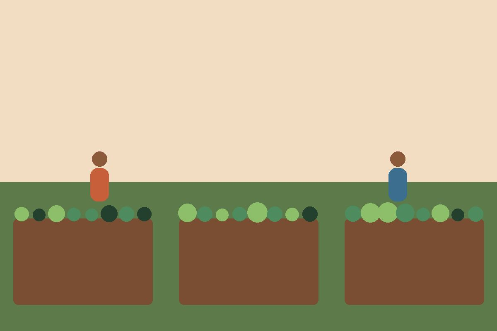
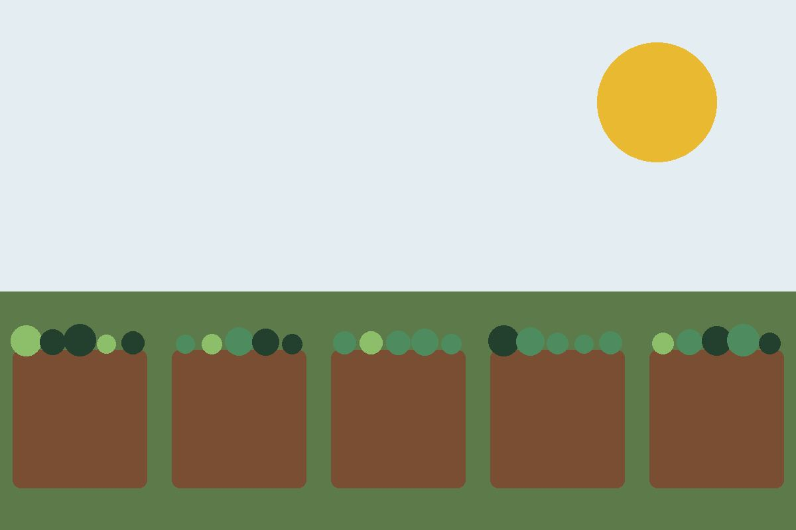
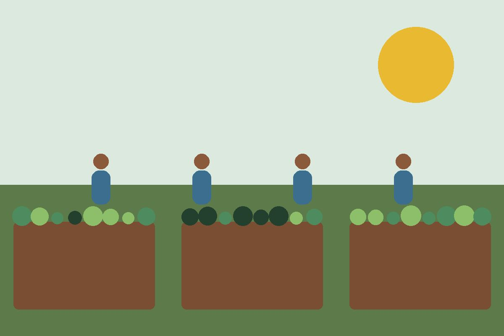

Educação ambiental
Horta na Escola
Montamos e mantemos hortas em escolas públicas. Os alunos aprendem do plantio à colheita, e as verduras reforçam a merenda.
- Escolas parceiras
- 9
- Alunos por ano
- 2.300
Três frentes de trabalho que se completam: plantar, cozinhar e multiplicar. Escolha uma para apoiar com seu tempo ou com sua doação.

Educação ambiental
Montamos e mantemos hortas em escolas públicas. Os alunos aprendem do plantio à colheita, e as verduras reforçam a merenda.

Segurança alimentar
O excedente das hortas vira refeição. Cozinheiras do bairro preparam marmitas entregues a famílias cadastradas e pessoas em situação de rua.

Geração de renda
Viveiro onde jovens de 16 a 24 anos aprendem a produzir mudas. Parte é vendida para custear bolsas; o restante abastece as hortas.
Não precisa saber plantar. Precisamos de gente para os mutirões de sábado, para a cozinha, para dar aulas e para ajudar na comunicação.

Meta de R$ 60.000 para cercamento, sistema de irrigação e ferramentas.
Chave Pix: demonstração acadêmica, indisponível
Qualquer valor ajuda. R$ 50 compram mudas para um canteiro inteiro.
Seja um padrinho de horta a partir de R$ 30 por mês e receba o relatório trimestral de impacto por e-mail.
Aceitamos ferramentas, sementes, adubo orgânico e utensílios de cozinha. Entregas na sede, de segunda a sábado.
Todas as doações aparecem na prestação de contas publicada na página de transparência.